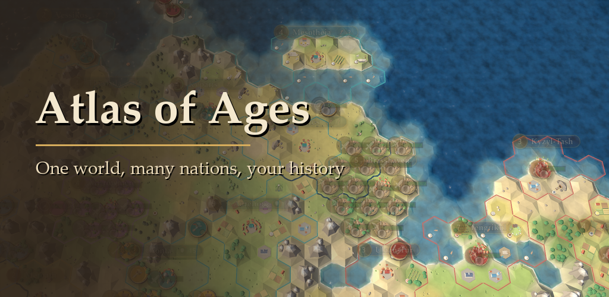
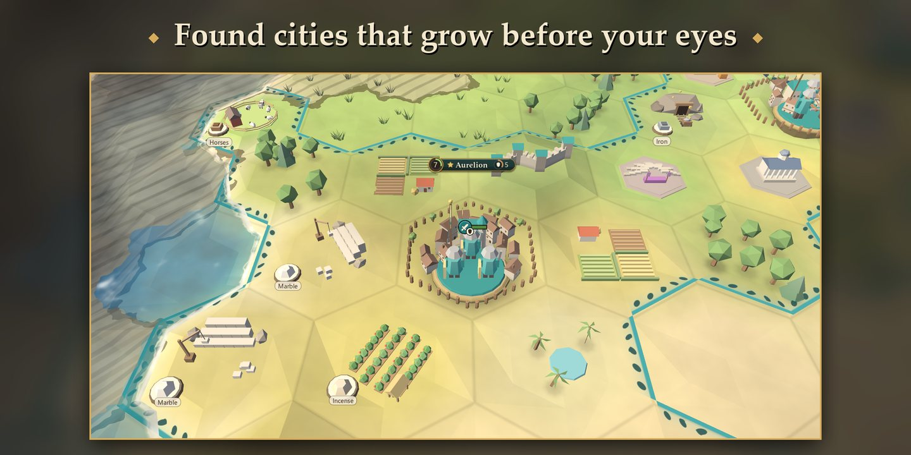
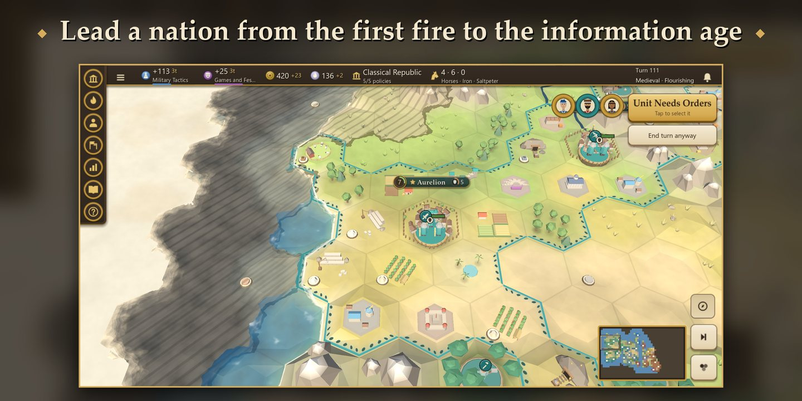
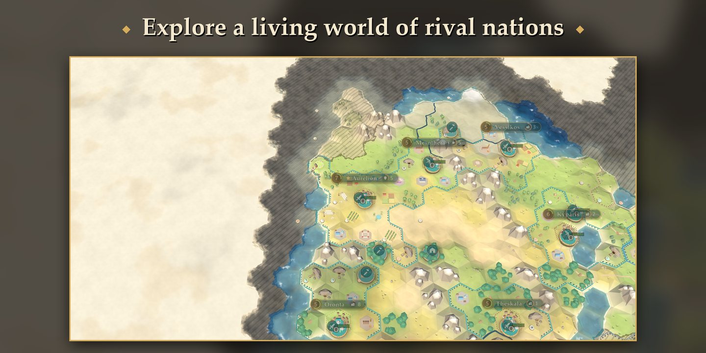
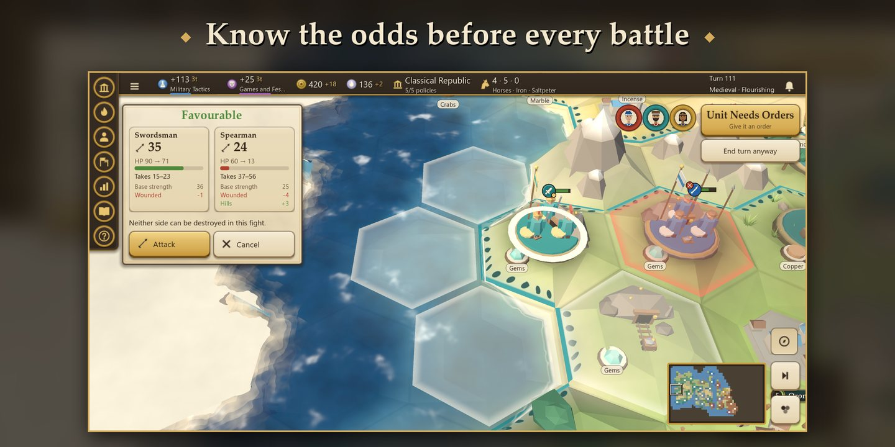
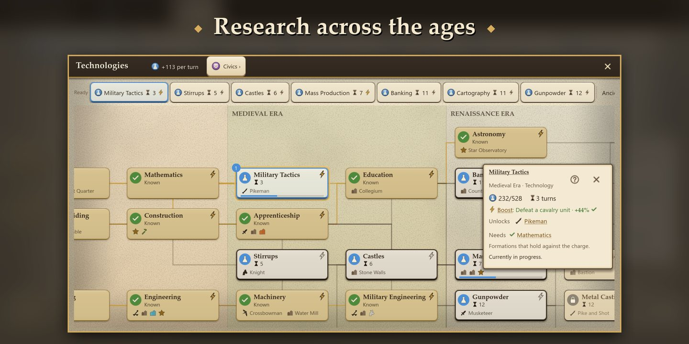
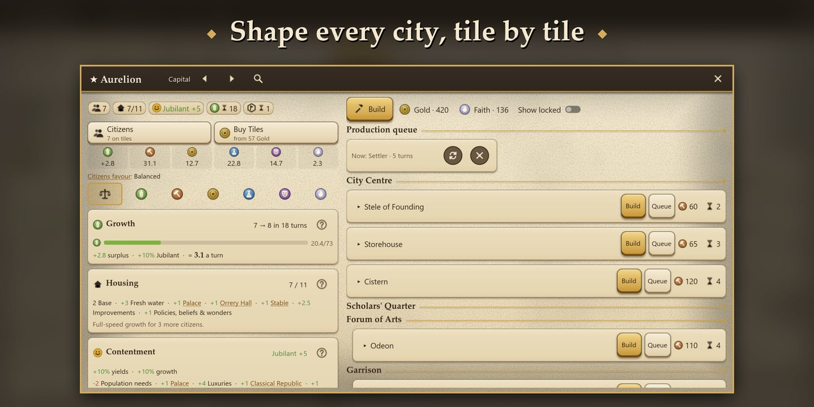
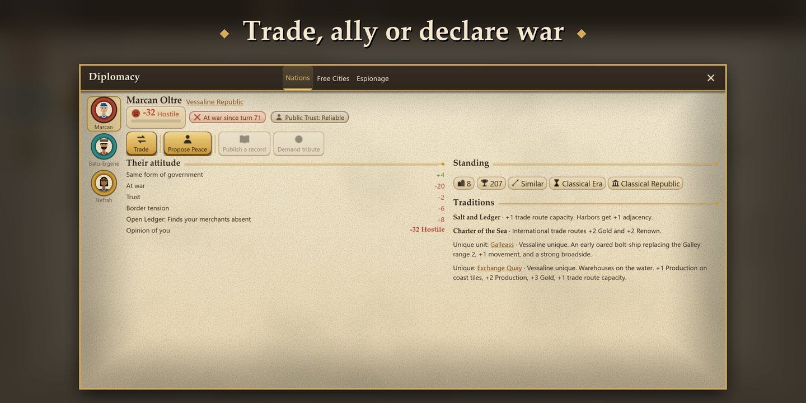
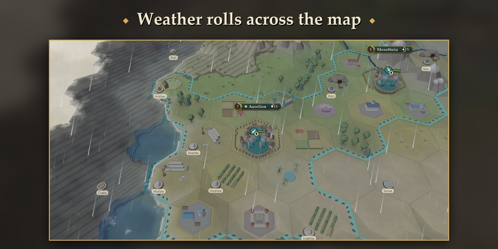

Turn-based 4X strategy for Android
Shape the history of a world.
Atlas of Ages is a deep turn-based strategy game in the grand tradition of the genre, built from the ground up for phones and tablets. Guide a nation from its first settlement to the Information Era: explore uncharted lands, build great cities, advance through science, culture and faith, and outwit rival empires on your way to victory.

Every game, a new world
Each campaign unfolds on a freshly generated world of continents and islands, rivers and mountain ranges, resources and independent city-states. Where you settle, what you build and whom you trust are yours to decide, and no two histories are ever the same.
A living world
Send scouts beyond your borders to chart coastlines and mountain passes, uncover resources and meet the Free Cities scattered across the map. Weather sweeps over the land, and day gives way to night as the turns go by.
Cities that grow with you
Found cities, work the land tile by tile and shape each one with districts, buildings and wonders. Where you build matters as much as what you build.
Knowledge, culture and faith
Advance through eight eras of technologies and civics, adopt governments and policies that suit your strategy, found a religion and recruit great people whose talents change the course of history.
Command your armies
Turn-based tactical combat rewards preparation: terrain, flanking, fortifications and sieges all count, and every battle shows its likely outcome before you commit.
Rivals with ambitions of their own
Computer-controlled nations pursue their own plans: they trade, form alliances, spread their faith and go to war. Seven difficulty tiers lead from a gentle first campaign to a true test of mastery.
Made for your phone
A clean, uncluttered interface puts every system within a tap. Preview each move before you make it, and learn the game through a six-chapter tutorial that explains its rules as you play.
Eight nations, eight ways to play
Every nation brings its own leader, abilities, unique unit and unique construction.
- Aurelian LyceumScience & Engineering
- Kingdom of SolmereCulture & Diplomacy
- Khardai HordeMilitary & Expansion
- Vessaline RepublicTrade & Maritime
- Nahrani River RealmReligion & Population
- Margraviate of BrennmarkProduction & Infrastructure
- Kethra TideholdsNaval Raiding & Conquest
- Orsenn CompactIntrigue & Free City Diplomacy
Five paths to victory
- DominationHold the original capital of every rival.
- ScientificComplete the expeditions that carry your people beyond the earth.
- CulturalDraw more visitors with your renown than any rival keeps at home.
- ReligiousMake your faith the majority across the world, and hold it.
- LegacyLead in score when the final turn arrives.
Six world types, from a single great Pangaea to scattered Archipelagos, and three map sizes give every campaign its own shape.
Free to try. One purchase for the complete game.
Free
- The complete six-chapter tutorial
- Unlimited games with the Kingdom of Solmere on Small Continents maps
- Four difficulty tiers, from Wayfarer to Sovereign
- Achievements and leaderboards
Full game
- All eight nations
- Small, Standard and Large maps
- All six world types
- All seven difficulty tiers, up to Ascendant
- Every future update included
No ads. No subscriptions. No energy or waiting timers.
Screenshots








Join the closed beta
Atlas of Ages is in closed testing on Google Play. Become a tester to play before release and help shape the final game.
Join the beta